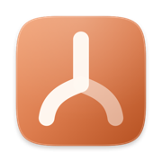
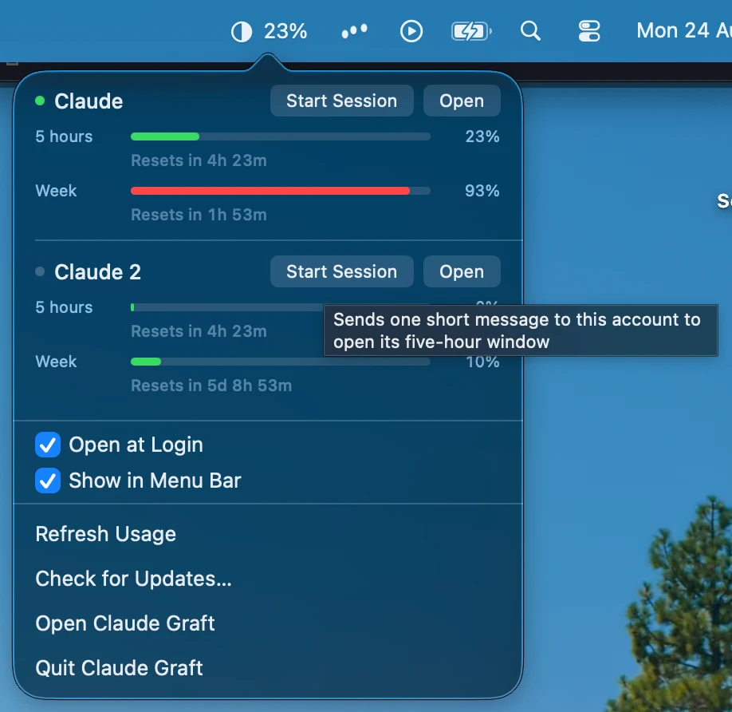
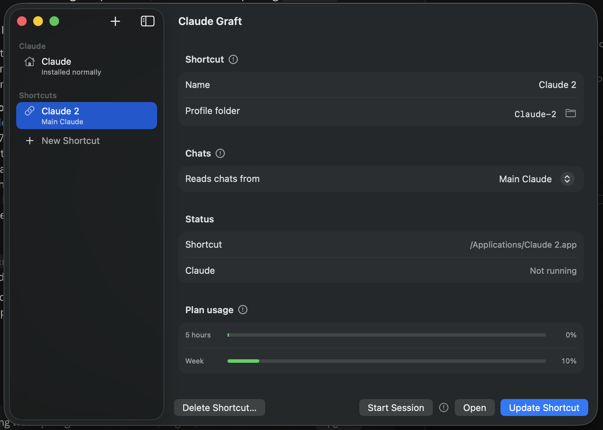
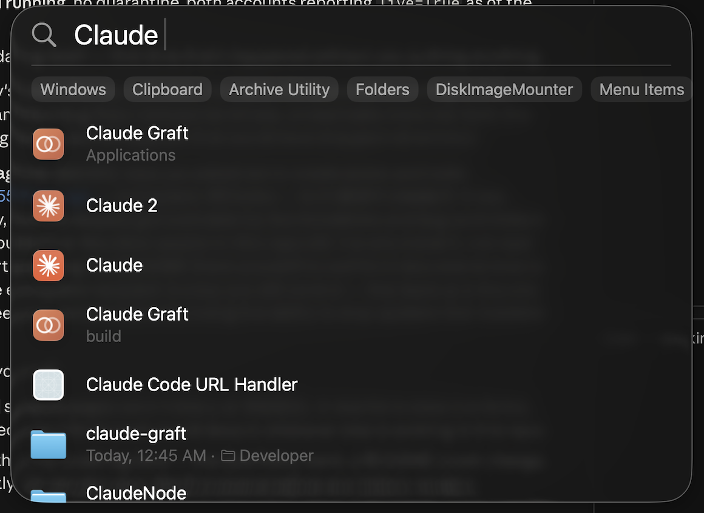

macOS · free · open source
Or 20× is less, lol.
One Claude login is never quite the right amount. Claude Graft gives you as many as you want — each with its own name, icon and account — and lets any of them read another one's Claude Code history.
brew install --cask aaditya-v-more/claude-graft/claude-graft
macOS 13+ · Apple Silicon and Intel · or grab the disk image from releases

This is the part nothing else does. Every other way of running two logins hands you an empty second profile with none of your work in it.
Graft lets a work login open your personal Claude Code history, connectors and extensions — while the accounts themselves stay completely separate. You choose, per shortcut, whose chats it reads.


Name it, press Create Shortcut, and you get an app in
/Applications. Launch it from Spotlight, pin it to the Dock,
give it its own icon.
Each one carries its own launcher, so it keeps working whether or not Graft is installed or even running.
It borrows as little as it can, and destroys nothing.
Only the access token is ever read — never the refresh token, because
rotating one signs Claude Desktop out. Nothing is written back to Claude's
config or keychain, and it goes to api.anthropic.com and
nowhere else.
Graft identifies its own apps by a description file they carry, never by name. Claude's own profile can't be deleted, and neither can anything outside Application Support.
It checks hourly and installs on its own. Every download is checked against a signing key that ships inside the app; anything that doesn't match is refused.
No licence to buy, no account to make, nothing measured and sent anywhere. It exists because running two Claude accounts was annoying enough to fix properly.
If it saved you the trouble, sponsoring it on GitHub is what keeps it worked on — new macOS releases break things, and Claude Desktop moves its own furniture about every few weeks.
Sponsor Claude Graft